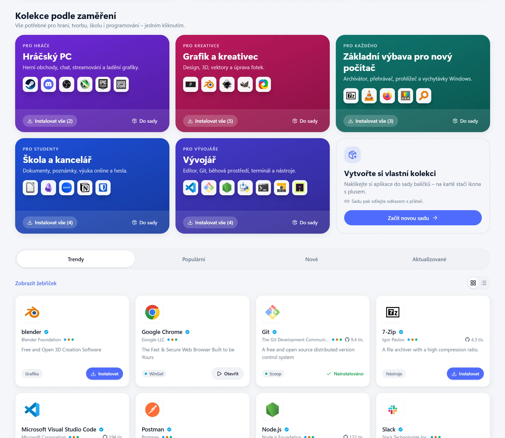
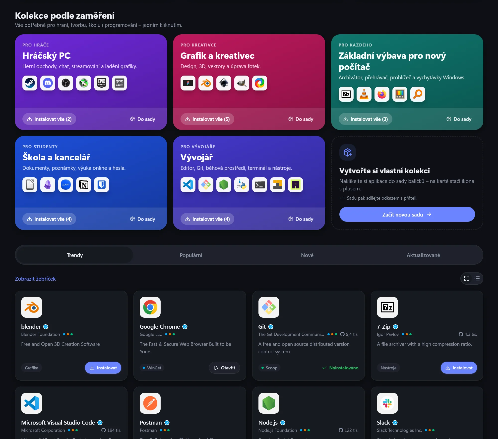
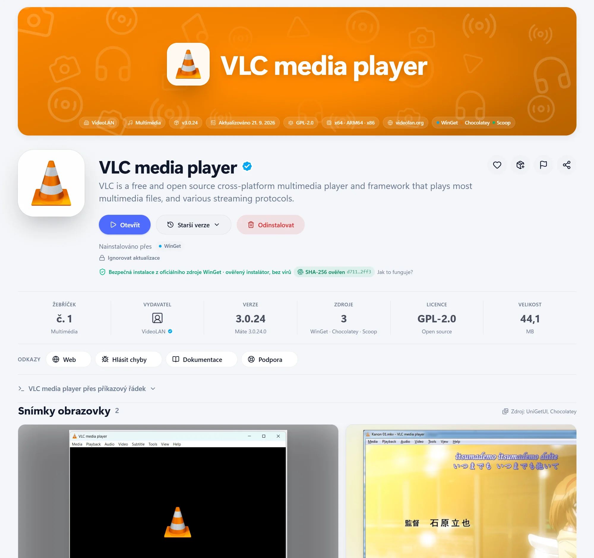
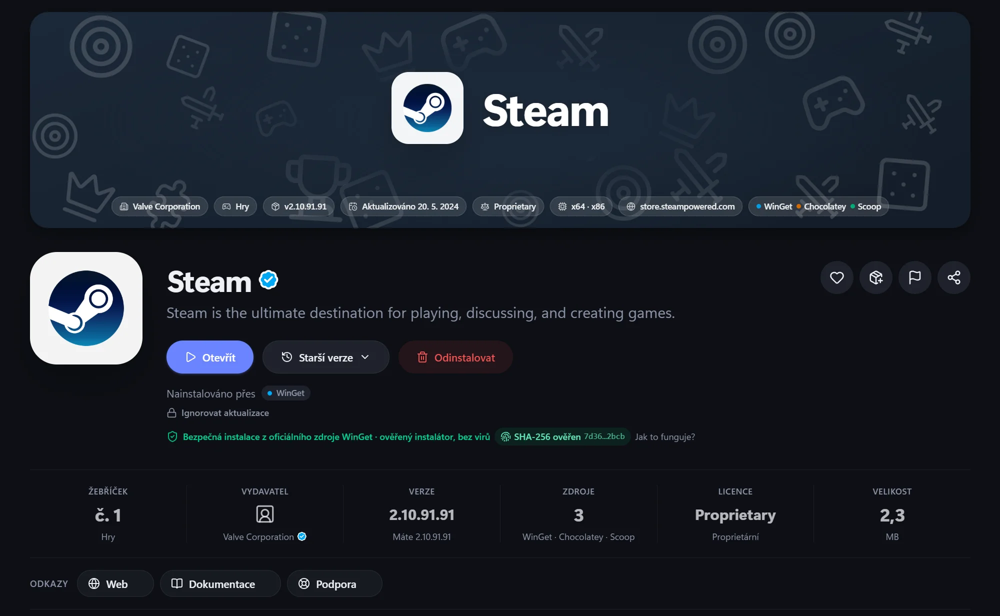
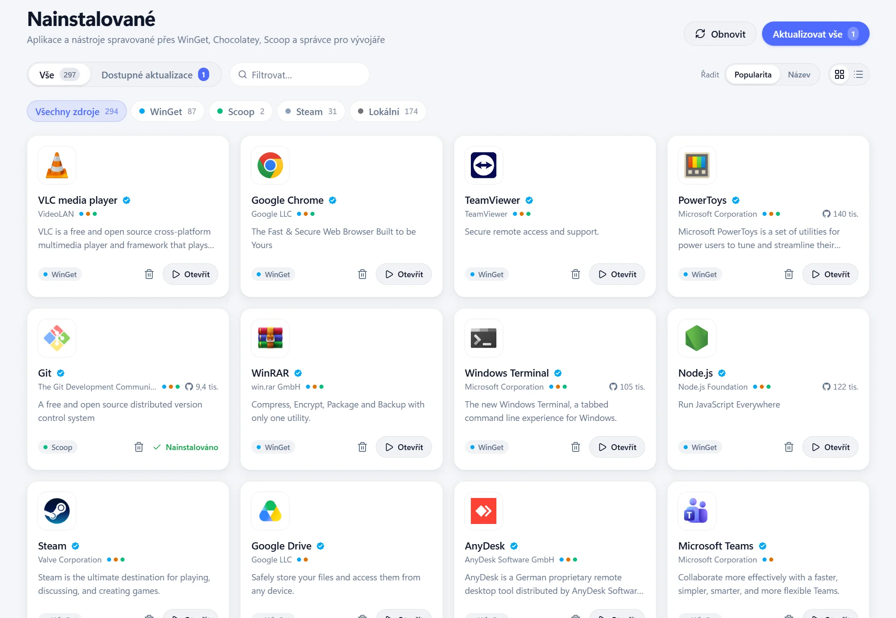
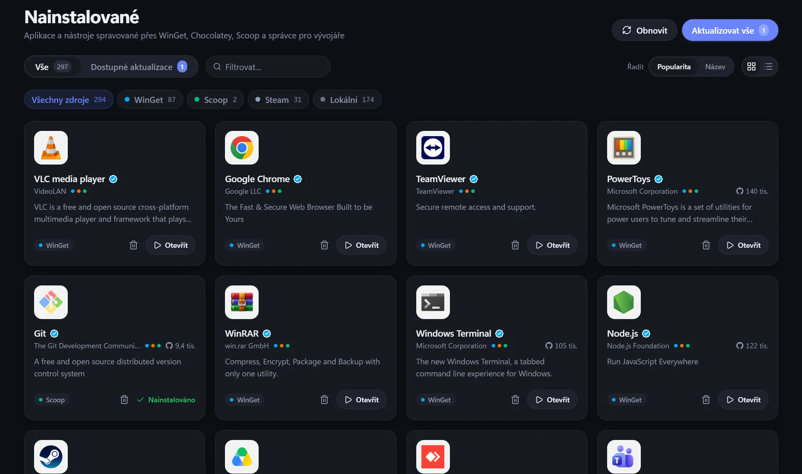

Možnosti instalace
Jako správce, interaktivně, konkrétní (i starší) verze, architektura, rozsah, vlastní parametry – nebo jen stažení instalátoru.
Funkce
Jedna aplikace = jedna karta. Když je aplikace ve více správcích balíčků, karta ukáže všechny zdroje a vy si vyberete, odkud instalovat.
Domovská stránka „Dnes“ s tipy ze stovek známých aplikací, výběry z kategorií a každý den jinou Aplikací dne, kategorie, žebříčky a kolekce podle profese. Rychlé vyhledávání přes Ctrl+K prohledá katalog i živě správce balíčků.


Velký banner, jehož barva se sama přizpůsobí barvám ikony aplikace. Galerie screenshotů s prohlížečem na celou obrazovku, co je nového, ochrana soukromí a rychlé odkazy na web, GitHub, dokumentaci a podporu.


Přehled všech aplikací v počítači – i programů instalovaných mimo WinGet, aplikací z Microsoft Storu a her ze Steamu. Dostupné aktualizace nainstalujete jedním tlačítkem „Aktualizovat vše“.


Odinstalátory po sobě často nechají nastavení, mezipaměti, zástupce i klíče v registru. Unibox je po odinstalaci najde – v AppData, Program Files a ProgramData, v nabídce Start, na ploše i v registru Windows – a nabídne je smazat. Nebo je uklidí rovnou a dá vám jen vědět.
Se sledováním instalace si Unibox před instalací a po ní pořídí snímek disku a registru. Zapamatuje si, co instalátor vytvořil, a po odinstalaci to nabídne smazat celé – i položky, které by podle názvu nenašel.
OBS Studio – zbytky po odinstalaci
Soubory a složky
Registr Windows
Klíče registru se před smazáním uloží do zálohy (.reg).
Co všechno se spouští hned po přihlášení do Windows? Unibox ukáže programy z registru, ze složky Po spuštění, z plánovače úloh i aplikace ze Storu na jednom místě – s názvem, vydavatelem a ikonou.
Po spuštění
Vypnutý program se nespustí, ale zůstane v seznamu.
Než aplikaci nainstalujete, podívejte se, jak ji hodnotí ostatní. U každé aplikace je průměr hvězdiček, rozložení hodnocení a nejužitečnější recenze – po přihlášení přes GitHub přidáte i vlastní.
Jako správce, interaktivně, konkrétní (i starší) verze, architektura, rozsah, vlastní parametry – nebo jen stažení instalátoru.
Sestavte si vlastní sdílitelnou sadu aplikací – nový počítač za pět minut. Profil i s nastavením do JSON nebo přehledné stránky HTML, export pro WinGet, oblíbené.
Vlastní titulková lišta ve stylu Windows 11, plynulé animace a okamžité přechody mezi stránkami. Světlý i tmavý motiv podle Windows. Při prvním spuštění vás provede úvodní průvodce.
Historie operací a protokoly, vyčištění mezipaměti správců balíčků. V sedmi jazycích: čeština, angličtina, němčina, španělština, francouzština, portugalština a čínština.
Přihlášení uživatelé přidávají k aplikacím aktuální snímky obrazovky. Unibox je zmenší do WebP bez metadat a po schválení je uvidí všichni. Nevhodné jde nahlásit.
Oblíbené, sada balíčků a předvolby na všech vašich počítačích. Přihlášení je dobrovolné – bez účtu funguje všechno ostatní.
Běh na pozadí
Zavřením okna se Unibox schová do oznamovací oblasti u hodin a rozběhnuté instalace v klidu dokončí. Průhledná jednobarevná ikona se přizpůsobí světlému i tmavému hlavnímu panelu a její popisek ukazuje počet dostupných aktualizací.